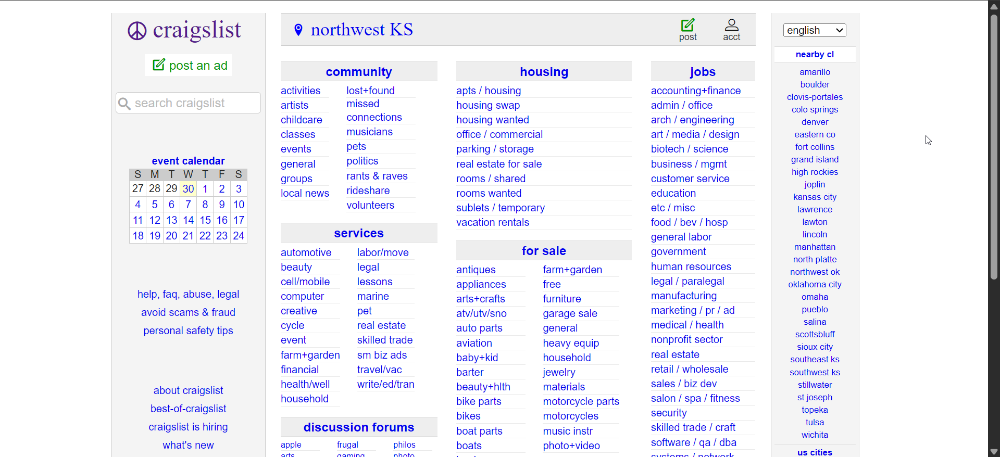

Introduction
This website documents my usability testing process for craigslist. This project brings together all the core skills from our course to demonstrate a professional usability evaluation.
Step 1: Selecting a Website
This step is based on Chapter 1: Establishing the Essentials. The selected website is craigslist. I chose this site because I am an international student about to leave the US to return to my home country. I need to get rid of most of my items, but I'm returning. One of my friends told me to check out Craigslist, which is one of the places I can post about stuff I want to sell quickly and for free. So i decide to use it for the project..
Screenshot:
